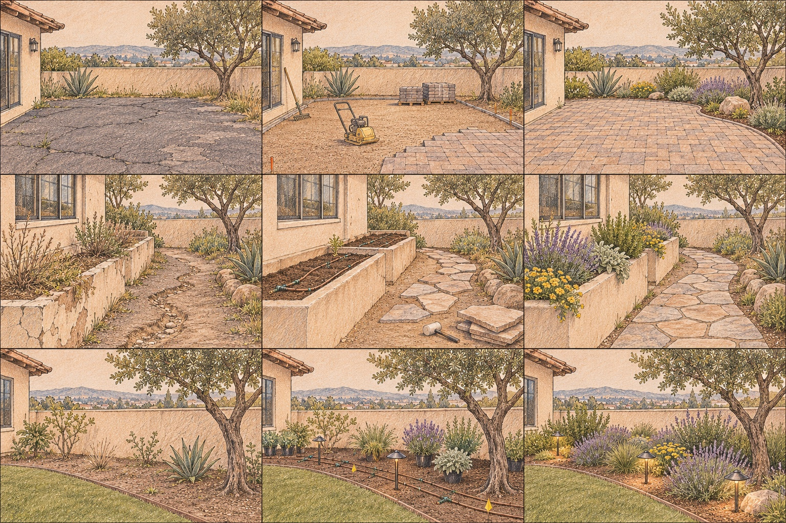
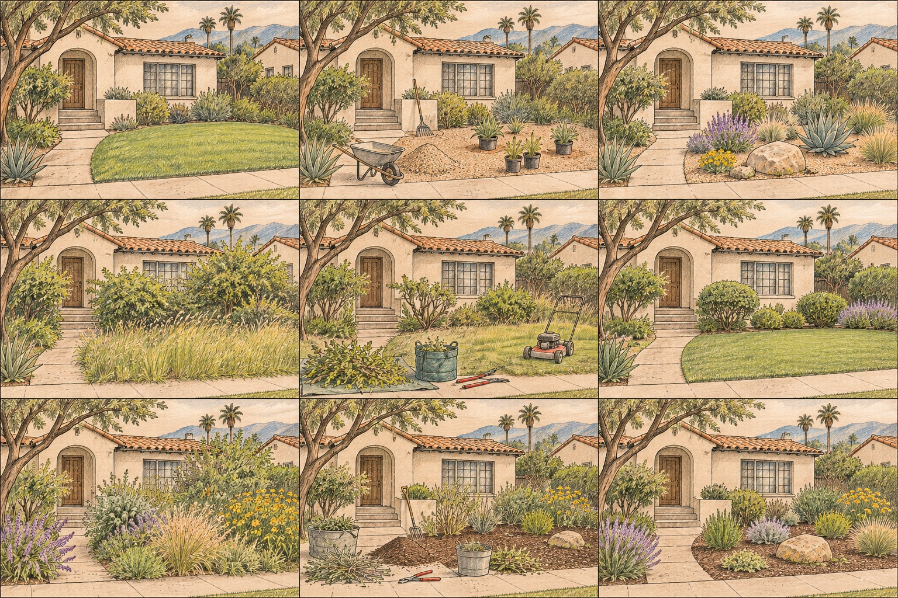
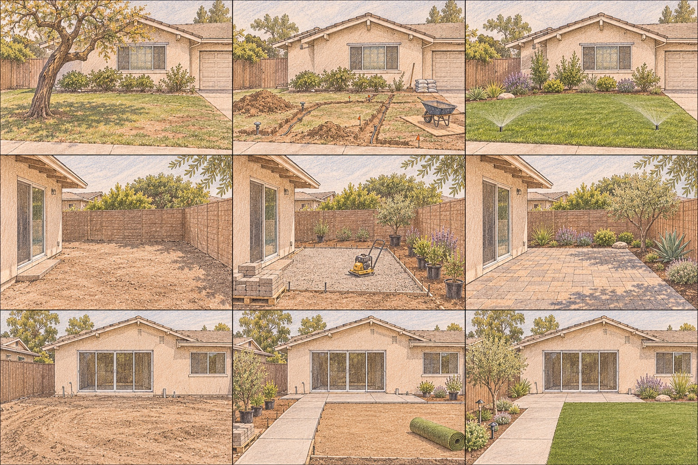

Asphalt-to-landscape conversion
Laurence praised the crew’s organization, hard work and paver installation as they turned an asphalt area into a landscaped space.

Read what homeowners said about their projects, with photos they shared on Yelp.
Read client reviews
Summaries of the 15 recommended Go Panorama Landscaping reviews on Yelp.
Laurence praised the crew’s organization, hard work and paver installation as they turned an asphalt area into a landscaped space.

This reviewer described four years of help caring for lawn, turf, shrubs, seasonal flowers, vegetables and an orchard. The crew also maintained irrigation, hardscaping and a fountain and helped with last-minute requests.

Eric chose a competitive quote to replace decomposed granite with concrete pavers along the existing curves. He praised the preparation, installation and cleanup.
The crew planted a hillside orchard, built a path and a concrete gazebo pad with retaining walls, removed old sheds and redid the front yard. The reviewer praised the horticultural advice and workmanship and noted delays at several points.
An uneven, muddy backyard became a patio for gardening and entertaining. The crew returned to build a retaining wall, steps and gravel paths for the front-yard lawn conversion. Matt appreciated the team’s design advice and willingness to work within the budget.
Jen praised the plant and care advice, consolidated drip zones, new turf and the careful work around existing stepping stones. The crew also reset sunken pavers in the walkway and driveway.

The crew removed old decking, installed a concrete patio and replaced the front picket fence. Richard praised the communication, workmanship and on-schedule completion.
Steve described new soil for planters, stone for a path and repairs to existing irrigation. He praised the crew’s responsiveness and care in fixing earlier work.
Vijay reported that the crew refreshed the landscape with new plants, soil treatment, lighting and irrigation. The team handled materials and stayed within budget.
Kiana described a landscape overhaul that stayed within budget, with ongoing maintenance and a quick response to an urgent fountain repair.
The crew replaced a front lawn with stone, plants and hardscaping. Li appreciated the advice on materials, budget awareness and on-time finish.
Eric was pleased with shrub trimming and lawn mowing and planned to hire the crew again for work around backyard trees.
Dorit described knowing Miguel for more than 20 years and praised his reliability, fair pricing and landscaping work.
The crew installed sprinklers and controls for both lawns, removed an old tree and added planting. Evelyn praised the communication, pricing and cleanup.
Leo described one large job and several smaller ones. He praised the crew’s attention to detail and reasonable pricing.
Yelp lists this review as currently not recommended and excludes it from the listing’s overall rating.
After a home rebuild, the crew installed a concrete patio, paths, steps and synthetic turf in back, plus irrigation and planting in front. Rachel praised the detailed plan, the crew’s care and their responsiveness during the roughly three-week project.